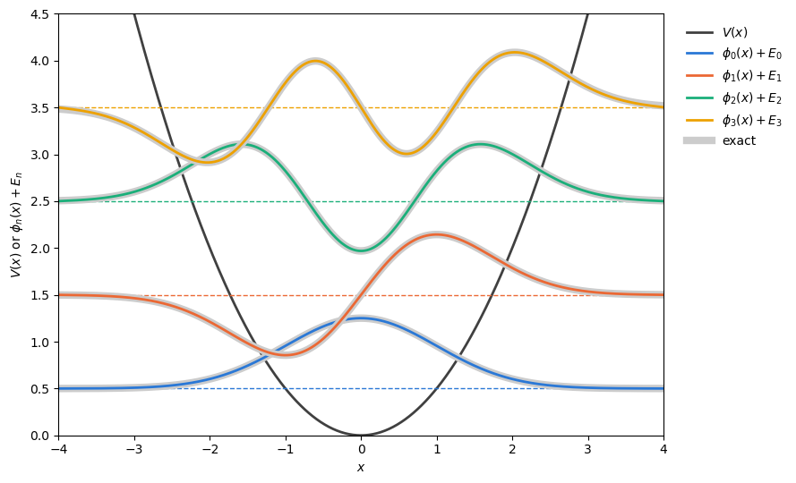
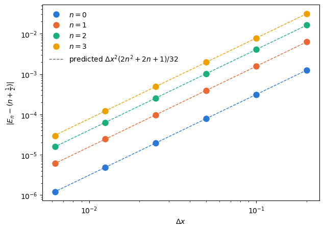

Lecture 11: Eigenvalue Problem Demo#
We solve the time-independent Schrödinger equation
on a grid, in units with \(\hbar = m = \omega = 1\), for the harmonic oscillator \(V(x) = \frac{1}{2}x^2\). We know the exact answer, \(E_n = n + \frac{1}{2}\), so this is where we test the method before trusting it on a problem we cannot solve by hand.
import time
from math import factorial
import matplotlib.pyplot as plt
import numpy as np
import scipy.linalg
import scipy.sparse
import scipy.sparse.linalg
import scipy.special
COLORS = ["#2a78d6", "#eb6834", "#1baf7a", "#eda100"] # one color per state n = 0, 1, 2, 3
1. The Hamiltonian matrix#
On the grid \(x_i = -L/2 + i\,\Delta x\), \(i = 0, \dots, N_D\), with \(\Delta x = L/N_D\),
Only three diagonals are nonzero, so we store \(H\) as a sparse matrix: about \(3(N_D + 1)\) numbers instead of \((N_D + 1)^2\).
def V(x):
return 0.5 * x**2
def make_grid(L, ND):
# ND + 1 points from -L/2 to L/2, and the spacing
x = np.linspace(-L / 2, L / 2, ND + 1)
return x, x[1] - x[0]
def hamiltonian(x, dx, V):
# sparse tridiagonal finite-difference Hamiltonian
off = np.full(len(x) - 1, -0.5 / dx**2)
diag = 1.0 / dx**2 + V(x)
return scipy.sparse.diags([off, diag, off], [-1, 0, 1], format="csc")
Check against the slides: \(L = 8\) and \(N_D = 4\) (so \(\Delta x = 2\)) should give \(H_{00} = 8.25\) and off-diagonal entries \(-0.125\).
x, dx = make_grid(8, 4)
print(hamiltonian(x, dx, V).toarray())
[[ 8.25 -0.125 0. 0. 0. ]
[-0.125 2.25 -0.125 0. 0. ]
[ 0. -0.125 0.25 -0.125 0. ]
[ 0. 0. -0.125 2.25 -0.125]
[ 0. 0. 0. -0.125 8.25 ]]
2. Three ways to find the lowest eigenvalues#
Predict first: for \(N_D = 3000\), which of these is fastest, and which is slowest?
scipy.linalg.eigh(H): dense matrix, computes all \(N_D + 1\) eigenpairs.scipy.sparse.linalg.eigsh(H, k=2, which='SM'): ARPACK, asks directly for the 2 eigenvalues of smallest magnitude.scipy.sparse.linalg.eigsh(H, k=2, sigma=0, which='LM'): ARPACK in shift-invert mode, which finds the largest eigenvalues of \((H - \sigma)^{-1}\), i.e. the \(E_n\) closest to \(\sigma\).
def best_time(f, repeat=3):
# best wall-clock time over a few runs (like %timeit, but bounded)
times = []
for _ in range(repeat):
t0 = time.perf_counter()
f()
times.append(time.perf_counter() - t0)
return min(times)
L = 8
for ND in [600, 3000]:
x, dx = make_grid(L, ND)
H = hamiltonian(x, dx, V)
H_dense = H.toarray()
t_dense = best_time(lambda: scipy.linalg.eigh(H_dense))
t_sm = best_time(lambda: scipy.sparse.linalg.eigsh(H, k=2, which="SM"), repeat=1)
t_si = best_time(lambda: scipy.sparse.linalg.eigsh(H, k=2, sigma=0, which="LM"))
print(f"N_D = {ND}")
print(f" 1. dense eigh (all eigenpairs) {t_dense:9.4f} s")
print(f" 2. eigsh, which='SM' {t_sm:9.4f} s")
print(f" 3. eigsh, shift-invert sigma=0 {t_si:9.4f} s")
N_D = 600
1. dense eigh (all eigenpairs) 0.0435 s
2. eigsh, which='SM' 0.1725 s
3. eigsh, shift-invert sigma=0 0.0009 s
N_D = 3000
1. dense eigh (all eigenpairs) 2.2079 s
2. eigsh, which='SM' 8.6241 s
3. eigsh, shift-invert sigma=0 0.0031 s
Why is which='SM' so slow? ARPACK converges quickly to eigenvalues that stand out in magnitude from the rest of the spectrum.
The largest eigenvalue of \(H\) is about \(2/\Delta x^2\) (about \(3 \times 10^5\) at \(N_D = 3000\)), so on that scale \(E_0 = 0.5\) and \(E_1 = 1.5\) are bunched together near zero.
Shift-invert maps \(E_n \to 1/(E_n - \sigma)\). With \(\sigma = 0\) the ground state becomes the largest eigenvalue, 3 times larger than the next one, and ARPACK converges in a few iterations.
Each iteration solves a tridiagonal linear system, which costs only \(O(N_D)\).
3. From eigenvectors to wave functions#
eigsh returns unit vectors, \(\sum_i |v_i|^2 = 1\). A wave function needs
The overall sign of an eigenvector is arbitrary (ARPACK starts from a random vector), so a plot can flip from one run to the next. We fix it to match the exact Hermite functions, which are positive at large \(x\).
def lowest_states(H, dx, k, sigma=0):
# k eigenvalues closest to sigma (ascending) and normalized wave functions (columns of psi)
E, v = scipy.sparse.linalg.eigsh(H, k=k, sigma=sigma, which="LM")
order = np.argsort(E)
E, psi = E[order], v[:, order] / np.sqrt(dx)
for n in range(k):
# sign convention: the outermost lobe on the right is positive
lobe = np.flatnonzero(np.abs(psi[:, n]) > 0.01 * np.abs(psi[:, n]).max())[-1]
psi[:, n] *= np.sign(psi[lobe, n])
return E, psi
def phi_exact(n, x):
return scipy.special.eval_hermite(n, x) * np.exp(-x**2 / 2) / np.sqrt(2**n * factorial(n) * np.sqrt(np.pi))
L, ND = 8, 600
x, dx = make_grid(L, ND)
E, psi = lowest_states(hamiltonian(x, dx, V), dx, k=6)
# overlaps sum_i phi_m(x_i) phi_n(x_i) dx should be the identity matrix
print(np.round(psi[:, :4].T @ psi[:, :4] * dx, 6) + 0.0) # + 0.0 turns -0.0 into 0.0
[[1. 0. 0. 0.]
[0. 1. 0. 0.]
[0. 0. 1. 0.]
[0. 0. 0. 1.]]
fig, ax = plt.subplots(figsize=(9, 5.5))
ax.plot(x, V(x), color="0.25", lw=2, label="$V(x)$")
for n in range(4):
ax.axhline(E[n], color=COLORS[n], lw=1, ls="--")
ax.plot(x, phi_exact(n, x) + E[n], color="0.8", lw=6) # exact, drawn underneath
ax.plot(x, psi[:, n] + E[n], color=COLORS[n], lw=2, label=rf"$\phi_{n}(x) + E_{n}$")
ax.plot([], [], color="0.8", lw=6, label="exact")
ax.set_xlabel("$x$")
ax.set_ylabel(r"$V(x)$ or $\phi_n(x) + E_n$")
ax.set_xlim(-L / 2, L / 2)
ax.set_ylim(0, 4.5)
ax.legend(loc="upper left", bbox_to_anchor=(1.02, 1), frameon=False)
plt.tight_layout()
plt.show()

4. Validation: compare with the exact energies#
How close are we to \(E_n = n + \frac{1}{2}\)?
print(" n numerical exact error")
for n in range(6):
print(f"{n:2d} {E[n]:.8f} {n + 0.5:11.1f} {E[n] - (n + 0.5):+.1e}")
n numerical exact error
0 0.49999489 0.5 -5.1e-06
1 1.49998549 1.5 -1.5e-05
2 2.50011200 2.5 +1.1e-04
3 3.50142327 3.5 +1.4e-03
4 4.50875960 4.5 +8.8e-03
5 5.53677477 5.5 +3.7e-02
The low states come out slightly too low, while the higher states come out too high by much more. Two different errors are at work. The next two cells separate them.
Error 1: the grid spacing \(\Delta x\)#
Taylor expanding the finite difference,
so the discrete kinetic energy is off by \(-\frac{\Delta x^2}{24}\phi''''\). First-order perturbation theory then predicts \(\Delta E_n \approx -\frac{\Delta x^2}{24}\langle p^4\rangle_n = -\frac{\Delta x^2}{32}\left(2n^2 + 2n + 1\right)\) for the harmonic oscillator. To see this error on its own, we use a large box (\(L = 10\)) and shrink \(\Delta x\).
L = 10
NDs = np.array([50, 100, 200, 400, 800, 1600])
dxs = L / NDs
errors = []
for ND in NDs:
x, dx = make_grid(L, ND)
E_ND, _ = lowest_states(hamiltonian(x, dx, V), dx, k=4)
errors.append(E_ND - (np.arange(4) + 0.5))
errors = np.array(errors)
fig, ax = plt.subplots(figsize=(7, 5))
for n in range(4):
predicted = dxs**2 / 32 * (2 * n**2 + 2 * n + 1)
ax.loglog(dxs, predicted, color=COLORS[n], lw=1, ls="--")
ax.loglog(dxs, np.abs(errors[:, n]), "o", color=COLORS[n], ms=8, label=f"$n = {n}$")
ax.plot([], [], color="0.4", lw=1, ls="--", label=r"predicted $\Delta x^2 (2n^2 + 2n + 1)/32$")
ax.set_xlabel(r"$\Delta x$")
ax.set_ylabel(r"$|E_n - (n + \frac{1}{2})|$")
ax.legend(frameon=False)
plt.show()
print("ratio of errors when dx is halved:")
print(np.round(errors[:-1] / errors[1:], 2))

ratio of errors when dx is halved:
[[4.01 4.01 4.02 4.03]
[4. 4. 4.01 4.01]
[4. 4. 4. 4.01]
[4. 4. 4. 4.03]
[4. 4. 4.02 4.12]]
Slope 2 on the log-log plot, and halving \(\Delta x\) cuts the error by a factor of 4: the method is second order, and the points sit on the prediction.
Error 2: the box size \(L\)#
The matrix is equivalent to hard walls just outside \(x = \pm L/2\), where \(\phi = 0\). The exact \(\phi_n\) leaks past the classical turning point \(x_n = \sqrt{2n + 1}\) and decays like \(e^{-x^2/2}\). If a wall cuts into that tail, the state is squeezed and its energy goes up. Fix \(\Delta x = 0.02\) and vary \(L\):
print("turning points x_n:", np.round(np.sqrt(2 * np.arange(6) + 1), 2))
print(" L E_n - (n + 1/2) for n = 0, ..., 5")
for L in [6, 8, 10, 12]:
x, dx = make_grid(L, round(L / 0.02))
E_L, _ = lowest_states(hamiltonian(x, dx, V), dx, k=6)
print(f"{L:4d} " + " ".join(f"{err:+.1e}" for err in E_L - (np.arange(6) + 0.5)))
turning points x_n: [1. 1.73 2.24 2.65 3. 3.32]
L E_n - (n + 1/2) for n = 0, ..., 5
6 +3.4e-04 +5.5e-03 +3.8e-02 +1.5e-01 +4.3e-01 +9.3e-01
8 -1.2e-05 -5.0e-05 +1.4e-05 +1.2e-03 +8.2e-03 +3.5e-02
10 -1.3e-05 -6.2e-05 -1.6e-04 -3.1e-04 -5.0e-04 -6.8e-04
12 -1.3e-05 -6.3e-05 -1.6e-04 -3.1e-04 -5.1e-04 -7.6e-04
The \(L = 10\) and \(L = 12\) rows agree to within \(10^{-4}\): once the walls are far enough away, only the small, negative grid error from Error 1 is left. With \(L = 8\) (walls at \(\pm 4\)), \(E_0\) and \(E_1\) are fine, but the walls push \(E_3\) up by about \(10^{-3}\) and \(E_5\) (turning point \(x_5 \approx 3.3\)) by about \(4 \times 10^{-2}\).
5. Your turn: Assignment 2#
Nothing above is specific to the harmonic oscillator except V(x) and the exact answers.
For a potential without exact answers, check the results yourself before trusting them:
Grid: halve \(\Delta x\). The change in \(E_n\) should shrink by about 4 each time.
Box: make \(L\) larger. The energies you report should not move.
Normalization: divide by \(\sqrt{\Delta x}\) and check \(\sum_i |\phi_i|^2\,\Delta x = 1\) before plotting.
Shift:
sigmashould sit at or below the lowest energy you expect. Shift-invert finds the \(E_n\) closest to \(\sigma\), so \(\sigma = 0\) works here only because every \(E_n > 0\).
Looking ahead: the eigenpairs give the propagator, \(K(x, t; x', 0) = \sum_n \phi_n(x)\,\phi_n^*(x')\,e^{-iE_n t/\hbar}\), and the partition function, \(Z(\beta) = \sum_n e^{-\beta E_n}\).